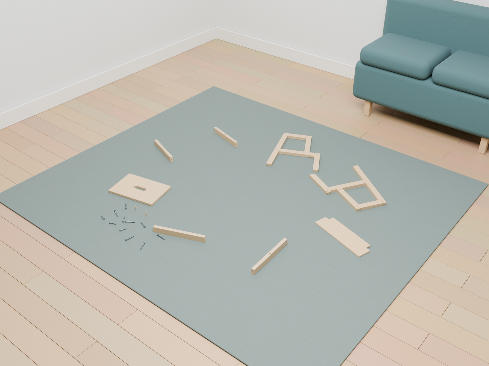

Pick up. Assemble. Turn over. Release.
The complete LACK table task, with both hands withdrawing at the end.
Watch the complete assembly, then step into a virtual first-person view. New furniture and movement demos are below.
The complete LACK table task, with both hands withdrawing at the end.
A glasses-style camera follows the work area through the same completed assembly.
Simulated camera view; not a recording from a tracked human head.
These show individual operations. They are not complete furniture builds.
Aligned, offset and tilted attempts side by side.
Reach, grasp, lift and lower a panel. The torso is supported in this successful trial.
A preassembled two-drawer cabinet responds as the drawers extend.

BEKVÄM parts are ready in the room. The complete build is still in progress; the frame-insertion clip above shows the current operation.